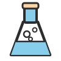
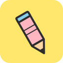
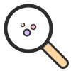
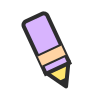

Le Labo des P'tits Curieux
Découvre la magie de la science avec des objets de la cuisine ! Des expériences simples, visuelles et sans danger (avec l'aide d'un adulte) pour les petits génies de 5 ans.
Essayer la Gem
Des assistants Gemini créés pour s'amuser et apprendre — pour les enfants et leurs parents !
Découvrir nos Gems ↓Une Gem est un assistant personnalisé sur Google Gemini. Un compte Google gratuit est nécessaire pour l'utiliser.

Découvre la magie de la science avec des objets de la cuisine ! Des expériences simples, visuelles et sans danger (avec l'aide d'un adulte) pour les petits génies de 5 ans.
Essayer la GemBesoin de bouger et de rigoler ? Deviens un crabe rigolo, un astronaute en apesanteur ou un flamant rose équilibriste ! Des petits défis physiques de 30 secondes pour canaliser l'énergie des enfants.
Essayer la Gem
Transforme ta maison en terrain de jeu géant ! Des chasses aux trésors adaptées aux enfants de 5 ans pour apprendre les couleurs, les formes et les mots tout en s'amusant.
Essayer la Gem
Je transforme vos idées simples en coloriages parfaits pour les enfants de 5 ans : traits très épais, grands espaces vides et aucun gris !
Essayer la GemCliquez sur le bouton « Essayer la Gem » de la Gem qui vous intéresse pour l'ouvrir dans Google Gemini
Expliquez simplement ce que vous cherchez — la Gem s'occupe du reste !
Imprimez, jouez, explorez — chaque Gem est conçue pour être facile et fun à utiliser
Une Gem est un assistant personnalisé créé sur Google Gemini, l'intelligence artificielle de Google. Chaque Gem est configurée pour une activité précise : coloriages, expériences de science, défis rigolos ou chasses aux trésors.
Oui, toutes nos Gems sont entièrement gratuites. Il suffit d'avoir un compte Google gratuit (le même que pour Gmail, YouTube, etc.) pour accéder à Google Gemini et utiliser nos Gems.
Non, aucun abonnement payant n'est nécessaire. La version gratuite de Google Gemini permet d'utiliser toutes nos Gems. Un abonnement Google One AI Premium offre des fonctionnalités supplémentaires sur Gemini, mais il n'est pas requis.
Si vous n'avez pas encore de compte Google, vous pouvez en créer un gratuitement sur accounts.google.com. Une fois connecté, vous pourrez accéder directement à nos Gems.
Oui, Google Gemini fonctionne sur téléphone via le navigateur web ou l'application Gemini. Sur mobile, les boutons « Essayer la Gem » ouvriront directement l'application Gemini si elle est installée.